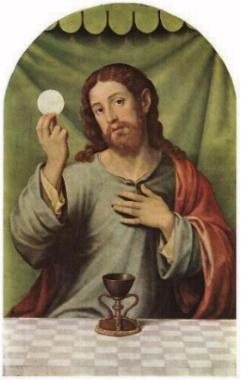
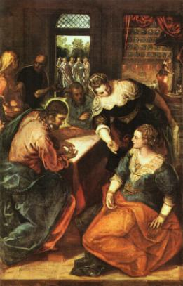
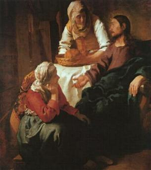
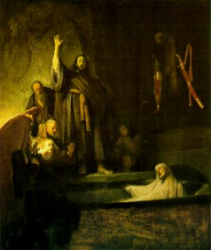

- Numa tarde, JESUS saiu em companhia dos Discípulos em direção
- Numa tarde, JESUS saiu em companhia dos Discípulos em direção a Betsáida. Uma multidão de pessoas percebeu e foi atrás.
a Betsáida. Uma multidão de pessoas percebeu e foi atrás. - Numa tarde, JESUS saiu em companhia dos Discípulos em direção
a Betsáida. Uma multidão de pessoas percebeu e foi atrás.
Tendo caminhado uma boa distância e observando que o povo continuava a segui-LO, parou e mandou que todos se acomodassem na relva numa pequena encosta de um morro. E ali fez um magnífico sermão sobre o Reino de DEUS. Atraídos pelo vigor e a beleza de suas palavras, as pessoas permaneciam em absoluto silêncio, sem qualquer preocupação com o tempo. As horas corriam e o sol vagarosamente se escondia no horizonte, anunciando que o dia já estava acabando. Então, respeitosamente os Apóstolos disseram-LHE:
“Despede a multidão, para que vão às aldeias e campos vizinhos procurar pousada e alimento, pois estamos num lugar deserto.” (Lc 9,12)
Entretanto, ELE já tinha percebido esta realidade e sabia também, que não ia adiantar debandar aquele povo, mandando-o de volta ao lar, porque eram tantas as pessoas, que elas não encontrariam nem pousada e nem alimentação naquela região. Por isso disse:
“Daí-lhes vós mesmos de comer.” (Lc 9,13)
Os Apóstolos assustados, responderam:
“Não temos mais que cinco pães e dois peixes; a não ser que fôssemos comprar alimento para todo esse povo”.(Lc 9,13)
ELE, porém, falou:
“Fazei-os acomodar-se por grupos de uns cinquenta”.(Lc 9,14)
E tomando os cinco pães e os dois peixes, elevou os olhos ao Céu, os abençoou, partiu e foi entregando aos Discípulos para distribuí-los à multidão. No final, todos comeram e ficaram saciados, e do que sobrou, recolheram doze cestos.
Após o Milagre da Multiplicação, fez muitos outros, curando as dores e enfermidades de todos que suplicavam o seu Divino auxílio. Em seguida, voltou para Cafarnaúm.

- Sem dúvida, o Milagre da Multiplicação dos Pães, prefigura e
antecipa numa prévia, o milagre que acontece na Santa Missa. Diariamente
o Sacrifício Eucarístico ou Santa Missa, que é o memorial da Paixão,
Morte e Gloriosa Ressurreição de NOSSO SENHOR JESUS CRISTO,
é celebrado em todas as partes do mundo. Nela, no momento da Consagração
acontece o fenômeno sobrenatural da
“Transubstanciação”, no qual, o ESPÍRITO SANTO
transforma as espécies de pão e vinho no Corpo, Sangue, Alma e Divindade
do SENHOR JESUS, mantendo entretanto, o aspecto exterior das espécies.
Assim, na Sagrada Comunhão ou seja, no Sacramento da Eucaristia, o Mesmo
e Único DEUS Todo-poderoso, é distribuído aos fieis em todas as Santas Missas,
como alimento espiritual que revigora a fé, dá proteção contra as ciladas do
malígno, estimula a disposição e inspira soluções para a vida. Então, em cada
Missa, faz acontecer a repetição do Milagre da Multiplicação, porque JESUS
sendo apenas UM, alimenta todos os dias e por todos os séculos em todas as
partes do mundo, uma multidão de pessoas que O amam e O procuram, em
busca de sua força Divina e de seu carinhoso alento.
 - Havia um doente chamado Lázaro, natural de Betânia onde residia
Estando Lázaro com uma séria enfermidade, as duas irmãs se apressaram em comunicar o fato a JESUS. ELE estava distante e ao receber a notícia disse:
“Esta doença não é mortal, mas é para a glória de DEUS, a fim de que por ela, seja glorificado o FILHO DE DEUS”.(Jo 11,4)
O SENHOR amava Lázaro e suas irmãs, porque eles eram fieis e em todas oportunidades souberam demonstrar um carinho muito especial para com ELE.
Todavia, JESUS não viajou naquele mesmo momento para Betânia, permaneceu ainda por dois dias no lugar em que se encontrava. Somente depois desse tempo é que falou aos Discípulos:
“Vamos outra vez até a Judéia!” (Jo 11,7)
Os Discípulos lembraram ao SENHOR:
“Há pouco, os judeus procuravam lapidar-te (matar a pedradas) e vais outra vez para lá?” (Jo 11,8)
JESUS apresentou um argumento irrefutável, explicando aos Apóstolos que quem caminha na luz (do direito, da justiça e da verdade), nada tem a temer, porque está com DEUS e DEUS está com ele. E logo depois acrescentou:
“Nosso amigo Lázaro dorme, mas vou despertá-lo”.(Jo 11,11)
Como os Apóstolos não compreenderam as palavras do SENHOR, ELE explicou claramente, dizendo que Lázaro tinha morrido, mas que a morte dele ia servir como um meio eficaz para robustecer a fé de muitas pessoas, a fim de que elas acreditassem NELE.
No dia seguinte, pela manhã, partiu para Betânia em companhia dos Apóstolos. Ao chegar, recebeu a notícia de que Lázaro estava sepultado há quatro dias.
Betânia era um lugarejo pequeno distante aproximadamente 3 quilômetros de Jerusalém. Muitos amigos e conhecidos de Lázaro vieram da cidade para consolar as irmãs e prestar uma homenagem ao falecido.
Quando Marta soube que JESUS tinha chegado, deixou sua casa com Maria e as visitas e foi ao encontro DELE. Disse:
“SENHOR, se estivesses aqui, meu irmão não teria morrido. Mas ainda agora sei que tudo o que pedires a DEUS, ELE te concederá”.(Jo 11,22)
Disse-lhe JESUS:
- “Teu irmão ressuscitará”.(Jo 11,23)
- “Sei, disse Marta, que ele ressuscitará na ressurreição (dos mortos), no último dia" (do julgamento final)! (Jo 11,24)

“EU Sou a Ressurreição e a Vida. Quem crê em MIM, ainda que morra, viverá. E quem vive e crê em MIM jamais morrerá. Crês nisso?”(Jo 11,25-26)
Ela disse:
“Sim, SENHOR, eu creio que tu és o CRISTO, o FILHO DE DEUS que devia vir ao mundo”.(Jo 11,27)
Tendo dito isto, Marta foi chamar sua irmã Maria, que não sabia da chegada de JESUS e estava em casa, recebendo os visitantes.
O SENHOR ainda não tinha entrado no lugarejo, permanecia no mesmo local onde encontrou Marta. Avisada por Marta, Maria chegou correndo, acompanhada de muitas pessoas que estavam em sua residência e que a seguiram, imaginando que ela fosse visitar o sepulcro do irmão. Com os olhos cheios de lágrimas, falou:
“SENHOR, se estivesses aqui, meu irmão não teria morrido”.(Jo 11,32)
Quando JESUS a viu chorar e também todos que a seguiram, compadeceu-se interiormente e ficou comovido. ELE que sempre foi bom e caridoso, também sentiu as lágrimas inundarem sua visão e chorou...
Depois de um pequeno intervalo de tempo, perguntou a Maria:
“Onde o colocastes?”(Jo 11,34)
- “SENHOR, vem e vê!”
JESUS chorou novamente...
Diziam então:
“Vede como
ELE o amava”.
(Jo 11,36) Outros disseram:
“Este, que abriu os olhos do cego, não
poderia ter feito com que ele não morresse?”(Jo
11,37)
Novamente JESUS ficou comovido e sentiu as
lágrimas em seus olhos. Silenciosamente dirigiu-se ao sepulcro de Lázaro. Era
uma abertura na rocha com uma pedra sobreposta.
ELE disse:
“Retirai a pedra!” (Jo 11,39)
Marta falou:
“SENHOR, já cheira mal, é o quarto
dia!”
Falou JESUS:
“Não te disse que, se creres, verás a glória
de DEUS?”(Jo 11,40)
Retiraram a pedra que fechava o túmulo. ELE erguendo os olhos ao Céu rezou uma prece ao CRIADOR:
“PAI, dou-te graças porque ME ouviste. EU sabia que sempre ME ouves; mas digo isto por causa da multidão que ME cerca, para que creiam que ME enviaste”. (Jo 11,42)

“Lázaro vem para fora!” (Jo 11,43)
Sob os olhares espantados e cheios de alegria das pessoas presentes, o morto saiu do túmulo pulando, pois estava com os pés e as mãos enfaixados e o rosto coberto com um sudário (como se fosse uma toalha de rosto de linho branco).
“Desatai-o e deixai-o ir-se”.(Jo 11,44)
Aconteceu uma jubilosa e fraterna comemoração, que expressava uma profunda felicidade que tomou conta de todos os corações, pelo retorno de Lázaro à vida.
Muitos judeus que lá se encontravam, ao presenciarem o extraordinário milagre, creram em JESUS. Outros, porém, invejosos, com o espírito cevado pela maldade, ao regressarem a Jerusalém, dirigiram-se aos escribas e fariseus e descreveram o acontecido. Os homens do Sinédrio reuniram-se com o Sumo-sacerdote e os anciãos do povo que pertenciam ao Grande Conselho Judeu e tramaram contra a vida do Rabi de Nazaré.